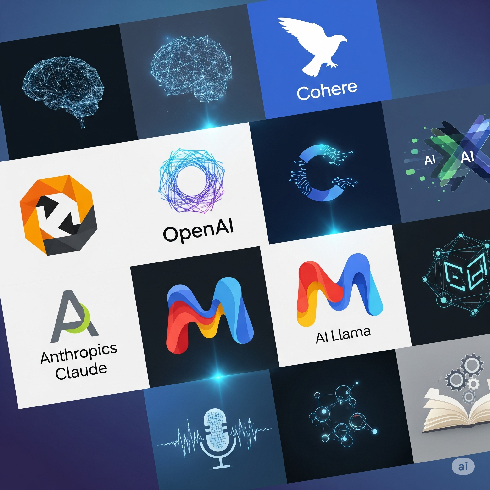
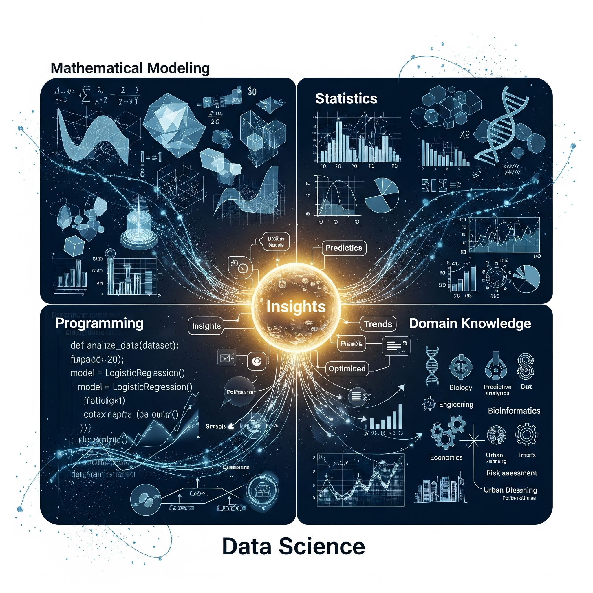
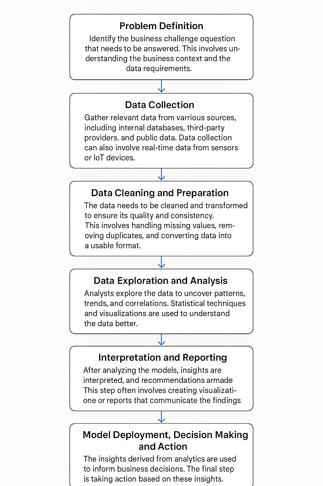

4 Block I Unit 1
Introduction to data science, evolution of data science, work profile of a data scientist, career in data science, nature of data science, typical working day of a data scientist, importance of data science in agribusiness; defining algorithm, big data, business analytics, statistical learning, defining machine learning, defining artificial intelligence, data mining; difference between analysis and analytics, business intelligence and business analytics, typical process of business analytics cycle.
4.2 Evolution of Data Science
Data science, as an interdisciplinary field, has a rich history of development and transformation. Its journey, rooted in statistics and mathematics, evolved alongside advancements in computing and data processing. Below is an overview of the evolution of data science with a timeline of key milestones.
Timeline of Data Science Evolution
1. Pre-1940s: The Birth of Statistics
17th-18th Century: Probability theory was formally developed by mathematicians such as Blaise Pascal and Pierre de Fermat.
19th Century: The term “statistics” emerged as a branch of mathematics focusing on data collection, organization, and analysis. Pioneers like Florence Nightingale applied statistical methods to public health issues.
2. 1940s-1960s: Computing Revolution Begins
1940s: The advent of digital computers revolutionized data processing. The development of ENIAC (Electronic Numerical Integrator and Computer) allowed for faster calculations.
1960s: Advancements in algorithms and computing power led to early data analysis software like SPSS and SAS, which simplified statistical analysis.
3. 1970s: The Era of Database Management
1970: Edgar F. Codd proposed the relational database model, which became the foundation of modern database systems.
1975: The development of SQL (Structured Query Language) allowed users to interact with relational databases effectively.
4. 1980s: Business Intelligence Emerges
1980s: The term “business intelligence” was coined to describe methods of transforming raw data into actionable insights for businesses. Tools like IBM’s decision support systems became popular for strategic decision-making.
5. 1990s: Big Data Foundations
1990s: The internet explosion led to exponential growth in data creation. Search engines and e-commerce platforms started generating vast amounts of data.
The first data warehouses and tools for extracting, transforming, and loading (ETL) data emerged to manage this influx.
6. 2000s: The Rise of Data Science
2001: William S. Cleveland formalized “data science” as a distinct discipline by integrating computational techniques with traditional statistics.
2006: The term “big data” gained prominence as companies like Google and Amazon processed massive datasets. The introduction of frameworks like Hadoop and MapReduce enabled scalable data processing.
7. 2010s: AI and Machine Learning Boom
2010s: Machine learning gained traction with algorithms capable of making predictions from data. Python and R became the dominant programming languages for data science.
Tools like TensorFlow and PyTorch accelerated deep learning adoption, powering innovations in natural language processing and image recognition.
8. 2020s: Democratization of Data Science
2020s: Cloud computing and platforms like AWS, Azure, and Google Cloud made data science accessible to organizations of all sizes. Low-code and no-code platforms democratized data analytics, empowering non-technical users. Ethical concerns around AI, data privacy, and fairness took center stage.
9. 2024 Onward
Artificial intelligence emerges as a new industrial wave sweeping across countries and industries. Large Language Models (LLMs) are primary frameworks for creating AI applications like chatGPT (OpenAI), Gemini AI (Google), Llama (Meta), etc. LLMs has democratized the use of AI and it is empowering a commonman with supercomputing at almost zero cost.

To learn more about LLMs and AI applications based on LLMs, read this article.
The evolution of data science reflects humanity’s quest to make sense of the growing complexity of data. From its roots in statistics to its modern applications in artificial intelligence, data science continues to drive innovation across industries, shaping the future of technology and decision-making.
4.3 Work Profile of a Data Scientist
The role of a data scientist has emerged as one of the most sought-after professions in the 21st century. Combining skills from statistics, computer science, and domain expertise, a data scientist is responsible for extracting valuable insights from structured and unstructured data to inform decisions and drive innovation.
Key Responsibilities
A data scientist’s responsibilities revolve around the entire lifecycle of data handling and analysis. Here are the primary tasks they handle:
Understanding Business Problems:
Data scientists work closely with stakeholders to define problems, set goals, and determine how data can solve those problems. They translate business challenges into analytical tasks.
Data Collection and Preprocessing:
Gathering data from various sources like databases, APIs, or external datasets is a critical step. They ensure the data is clean, consistent, and ready for analysis by addressing missing values, outliers, and inconsistencies.
Exploratory Data Analysis (EDA):
Using statistical tools and visualization techniques, data scientists explore the data to uncover patterns, trends, and relationships. This phase helps refine hypotheses and guide further analysis.
Model Development:
Data scientists apply machine learning, deep learning, or statistical algorithms to build predictive or descriptive models. These models are designed to solve specific problems, such as forecasting demand, detecting fraud, or recommending products.
Model Evaluation and Optimization:
Once models are developed, they are tested for accuracy, precision, recall, and other performance metrics. Optimization techniques are used to fine-tune the models for the best results.
Deployment and Monitoring:
Data scientists collaborate with software engineers and DevOps teams to integrate models into production systems. They monitor these models to ensure they perform as expected in real-world scenarios.
Communication of Insights:
Presenting findings in a clear and actionable manner is critical. Data scientists use dashboards, reports, and visualizations to communicate insights to non-technical stakeholders.
Skills Required
To excel as a data scientist, a combination of technical and soft skills is essential:
Technical Skills:
Programming: Proficiency in Python, R, or Julia for data manipulation and analysis.
Data Handling: Knowledge of SQL for database querying.
Machine Learning: Familiarity with algorithms, such as decision trees, neural networks, and clustering.
Big Data Tools: Experience with Hadoop, Spark, or other distributed computing frameworks.
Visualization: Use of tools like Tableau, Power BI, or Matplotlib.
Soft Skills:
Critical thinking to approach complex problems.
Strong communication skills for conveying insights effectively.
Team collaboration with engineers, analysts, and domain experts.
Applications of a Data Scientist’s Work Data scientists work across diverse industries. Here are a few examples:
Healthcare: Building predictive models for disease diagnosis and patient care optimization.
Finance: Fraud detection, risk assessment, and portfolio optimization.
Retail: Customer segmentation, personalized recommendations, and inventory management.
Agriculture: Predicting crop yields, optimizing resource use, and detecting pests.
Conclusion
The role of a data scientist is a blend of art and science. With the growing importance of data-driven decision-making, data scientists play a pivotal role in shaping strategies and innovations. Their work not only helps organizations stay competitive but also addresses societal challenges, making it a career of impact and growth.
4.4 Career in Data Science
A career in data science is a dynamic and highly sought-after field that combines expertise in mathematics, statistics, programming, and domain knowledge to analyze and interpret complex data. Data scientists extract insights from structured and unstructured data to drive business decisions, optimize processes, and predict future trends. Here’s an overview of a career in data science:

Key Skills Required:
Mathematics and Statistics: Understanding of probability, hypothesis testing, regression, and statistical modeling.
Programming: Proficiency in languages like Python, R, or SQL for data manipulation, analysis, and modeling.
Machine Learning & AI: Knowledge of algorithms (e.g., decision trees, SVM, neural networks) for predictive modeling and classification.
Data Visualization: Ability to present complex data insights clearly using tools like Tableau, Power BI, or libraries like Matplotlib, Seaborn.
Big Data Technologies: Familiarity with tools like Hadoop, Spark, and NoSQL databases (e.g., MongoDB, Cassandra).
Data Wrangling: Ability to clean, preprocess, and structure raw data for analysis.
Business Acumen: Understanding how data can solve business problems and inform decision-making.
Typical Roles:
Data Scientist: Works on designing and implementing machine learning models and analyzing complex datasets.
Data Analyst: Focuses on interpreting data to support business decision-making.
Machine Learning Engineer: Specializes in building and deploying machine learning models in production environments.
Data Engineer: Develops and maintains systems for collecting, storing, and processing data.
Business Intelligence Analyst: Translates data into actionable insights for business strategy.
AI Research Scientist: Conducts research to develop new AI algorithms or improve existing ones.
Career Path:
Entry-Level: Start as a data analyst or junior data scientist with a solid foundation in statistics and programming.
Mid-Level: Gain experience with machine learning models, big data technologies, and advanced analytics.
Senior-Level: Lead data science teams, manage data-driven projects, and focus on strategic business applications.
Specialization: You can specialize in specific areas like natural language processing (NLP), computer vision, or deep learning. Education & Training:
Bachelor’s Degree: In fields like Computer Science, Statistics, Mathematics, or Engineering.
Master’s/PhD: In Data Science, Machine Learning, Artificial Intelligence, or related fields (optional but beneficial).
Certifications: Various platforms (e.g., Coursera, edX, DataCamp) offer certifications in specific tools and techniques in data science.
Industry Applications:
Finance: Predicting stock prices, fraud detection, risk modeling.
Healthcare: Medical image analysis, patient prediction models, drug discovery.
E-commerce: Personalization, recommendation engines, customer segmentation.
Marketing: Customer analytics, targeted advertising, campaign optimization.
Manufacturing: Predictive maintenance, supply chain optimization.
Salary Range:
Entry-level: INR 5-12 lakhs per year.
Mid-level: INR 12-25 lakhs per year.
Senior-level: INR 25 lakhs and above (depending on experience and role).
Job Market:
The demand for data scientists continues to grow as more industries recognize the importance of data-driven decision-making. It’s considered a versatile career with opportunities in diverse industries such as finance, healthcare, retail, and technology.
Starting a career in data science typically involves mastering key programming languages, mathematical foundations, and machine learning algorithms, followed by gaining hands-on experience through projects or internships.
4.5 Nature of Data Science
Data science is the interdisciplinary field that combines statistical analysis, machine learning, data processing, and domain-specific knowledge to extract meaningful insights and make data-driven decisions. It involves the use of algorithms, data models, and advanced analytics techniques to process and analyze large volumes of structured and unstructured data. In India, data science is transforming industries by providing businesses with the tools they need to innovate, optimize processes, and create value.
Key Components of Data Science:
Data Collection: Gathering raw data from various sources like databases, sensors, social media, websites, and more. Data Cleaning and Preprocessing: Converting raw data into a structured format by handling missing values, outliers, and inconsistencies.
Exploratory Data Analysis (EDA): Analyzing the data to uncover patterns, relationships, and trends.
Modeling and Algorithms: Using machine learning algorithms and statistical models to make predictions or classify data.
Data Visualization: Presenting the findings in a visually appealing way, often through dashboards or charts, to aid decision-making.
Deployment: Deploying models and algorithms into production to make real-time or batch decisions based on fresh data.
Data Science Applications in India:
E-commerce and Retail:
Flipkart: Flipkart, one of India’s largest e-commerce platforms, uses data science for product recommendations, price optimization, inventory management, and personalized customer experiences. For example, by analyzing past purchase behavior and browsing patterns, Flipkart’s data science models suggest products that a customer is most likely to purchase.
Healthcare:
Practo: Practo uses data science for improving healthcare services, especially in predicting patient needs and doctor availability. It also aids in personalized health recommendations based on past medical history and symptoms reported by users. AI for Diagnostics: AI and machine learning are being applied in diagnosing diseases like cancer, diabetes, and heart conditions through pattern recognition in medical images (e.g., X-rays, MRIs). Companies like Niramai are using data science for early breast cancer detection.
Banking and Finance:
HDFC Bank: HDFC Bank uses data science to assess credit risk, detect fraud, and recommend financial products based on customer behavior. By analyzing a customer’s spending patterns, income, and financial history, HDFC can predict future needs and offer targeted loans or investment products.
Razorpay: A fintech company, Razorpay leverages data science to process payments and detect fraudulent transactions. They use predictive models to evaluate transaction behavior and flag unusual activities in real-time.
Agriculture:
Cropin: Cropin, an agri-tech company, uses data science to enhance agricultural productivity by providing farmers with insights based on data analysis. By collecting data on weather patterns, soil conditions, and crop health, they help farmers make data-driven decisions on irrigation, fertilizers, and pest control.
IoT and Data Science in Agriculture: Farmers are using sensors and IoT devices to collect data on soil moisture, weather conditions, and crop health. This data is then analyzed using machine learning models to provide actionable insights, which are especially useful for large-scale farming.
Transportation and Logistics:
Ola and Uber: Ride-hailing platforms like Ola and Uber leverage data science for optimizing routes, predicting demand, and setting dynamic pricing. Data from millions of rides helps these companies build models that predict areas with high demand and adjust prices accordingly.
Logistics: Data science is transforming supply chain management in India. Companies like Delhivery use data science to track packages in real-time, optimize delivery routes, and predict delivery times.
Telecom:
Reliance Jio: Data science is pivotal in optimizing network performance, customer experience, and predictive maintenance. Jio collects vast amounts of data on network usage, and by applying machine learning algorithms, it can predict areas with high network congestion and proactively improve performance.
Government and Public Policy: Smart Cities: Indian government initiatives like Smart Cities use data science to optimize urban planning, waste management, traffic control, and energy consumption. Data collected from IoT sensors and citizen feedback is analyzed to improve infrastructure and services.
Aadhaar: The Aadhaar system, India’s national identity database, uses data science to validate and authenticate the identities of citizens. The biometric data and demographic details are analyzed to prevent fraud and ensure accurate records.
Education:
BYJU’S: Ed-tech platforms like BYJU’S use data science to create personalized learning experiences. By analyzing a student’s learning patterns and performance, BYJU’s recommends content that is most suited to their individual learning style, thereby improving learning outcomes.
Challenges of Data Science in India:
Data Privacy and Security: With the rise of data-driven solutions, concerns about data privacy and security have become paramount. Companies must ensure that sensitive data, especially in sectors like banking and healthcare, is protected from breaches.
Data Availability and Quality: In India, many data sources are fragmented or unreliable. Clean and structured data is often hard to come by, especially in industries like agriculture and healthcare, where data collection infrastructure may be underdeveloped.
Skill Gap: Despite the growing demand for data scientists in India, there is still a gap between the skills required by employers and the skills possessed by many professionals entering the workforce. Bridging this gap through training and education is crucial for further growth in the field.
Infrastructure: In some regions, inadequate internet connectivity and computational infrastructure can make it difficult to collect, store, and analyze large datasets.
Conclusion
Data science is playing a crucial role in transforming industries across India. Whether it’s improving customer experience in e-commerce, advancing healthcare diagnostics, optimizing agriculture practices, or enhancing financial services, data science is the backbone of many innovations in the country. With a growing focus on data literacy, the rise of AI technologies, and increasing investments in digital infrastructure, India’s data science ecosystem is set to expand significantly in the coming years.
4.6 Typical Working Day of a Data Scientist
A data scientist’s typical working day involves a variety of tasks that require both technical expertise and analytical thinking. Their day begins with reviewing emails and communications from team members or stakeholders to understand any urgent needs or issues. Once up to speed, the primary task for a data scientist often revolves around gathering, cleaning, and preparing data. This stage involves accessing databases, extracting raw data, and ensuring it’s in a usable format. The data cleaning process can be time-consuming, as raw data is often messy, incomplete, or inconsistent.
After data preparation, the data scientist dives into exploratory data analysis (EDA). EDA involves visualizing data trends and identifying patterns or outliers that could inform the model-building process. This step typically includes generating summary statistics, creating charts, and using statistical techniques to assess the data’s quality.
Once the data is understood, the data scientist moves on to feature engineering. This involves creating new features or variables from the raw data that may help improve the performance of machine learning models. Then, machine learning models are built and tested. Data scientists frequently work with various algorithms, such as linear regression, decision trees, or neural networks, to find the best one for a given problem.
Following model development, a data scientist performs model evaluation using performance metrics like accuracy, precision, recall, or AUC-ROC to assess how well the model performs. The model may need refinement based on this feedback.
Throughout the day, data scientists also collaborate with stakeholders, data engineers, and other team members, participating in meetings to discuss findings, share progress, and refine strategies. They may end their day with documentation of their work, creating reports or presentations to communicate insights to non-technical stakeholders.
4.7 Importance of Data Science in Agribusiness
Data science plays a crucial role in the agribusiness sector by transforming traditional farming and agriculture practices into more efficient, sustainable, and data-driven processes. In agribusiness, data science applications can be seen in crop forecasting, precision farming, yield prediction, pest and disease detection, and resource management.
Crop Forecasting and Yield Prediction: Data scientists use machine learning algorithms and big data to analyze historical weather patterns, soil conditions, and crop health to predict crop yields. This helps farmers and agribusinesses make informed decisions about production volumes and market pricing.
Precision Farming: By analyzing data from various sources such as sensors, drones, and satellite imagery, data science enables precision farming techniques. This allows farmers to optimize resource use (water, fertilizers, etc.) and minimize waste, resulting in cost savings and higher productivity.
Pest and Disease Detection: Data science enables early detection of diseases and pests by analyzing environmental factors and crop images. Machine learning models trained on large datasets of plant health data can identify potential threats before they become widespread, reducing the need for chemical interventions and improving sustainability.
Supply Chain Optimization: Data science improves the efficiency of supply chains by forecasting demand, managing inventories, and optimizing routes for transporting produce. This reduces waste and ensures that goods reach markets in a timely manner, improving profitability for agribusinesses.
Sustainability and Environmental Impact: Data science aids in managing the environmental impact of agribusiness. Predictive models help optimize irrigation, monitor soil health, and assess the impact of various agricultural practices on the ecosystem, promoting sustainable farming practices.
4.8 Defining Key Terms in Data Science**
Algorithm: An algorithm is a set of instructions or rules designed to perform a specific task or solve a problem. In data science, algorithms are used to process data, learn from it, and make predictions or decisions without human intervention. Common algorithms include decision trees, linear regression, and k-nearest neighbors.
Big Data: Big data refers to large and complex datasets that are beyond the ability of traditional data-processing applications to handle. Big data is characterized by the 3Vs—volume, variety, and velocity. In business and analytics, big data enables organizations to gain deeper insights from massive datasets generated by social media, sensors, and other digital sources.
Business Analytics: Business analytics refers to the process of using data analysis and statistical methods to drive business decisions. It combines descriptive, predictive, and prescriptive analytics to analyze business data and make decisions based on that analysis. Business analytics helps organizations improve operations, marketing strategies, and customer relations.
Statistical Learning: Statistical learning is a framework for understanding data through statistical models and algorithms. It focuses on making predictions or inferences about a dataset using statistical methods. Examples of statistical learning techniques include regression analysis, classification, and clustering.
Machine Learning: Machine learning is a subset of artificial intelligence that involves the development of algorithms that allow computers to learn from and make predictions on data without explicit programming. Machine learning techniques include supervised learning (e.g., linear regression, decision trees), unsupervised learning (e.g., k-means clustering), and reinforcement learning.
Artificial Intelligence (AI): AI refers to the simulation of human intelligence in machines. AI enables machines to perform tasks such as decision-making, problem-solving, and language processing that would normally require human cognition. AI encompasses a wide range of technologies, including machine learning, natural language processing, and robotics.
Data Mining: Data mining is the process of discovering patterns, correlations, and insights from large datasets. It combines methods from statistics, machine learning, and database systems to extract meaningful information. Data mining can be used for tasks like fraud detection, customer segmentation, and market basket analysis.
4.9 Difference Between Analysis and Analytics**
Analysis refers to the process of examining data in order to extract useful information or insights. It involves the breakdown of complex data into smaller components for easier understanding. Data analysis can be performed using various techniques like statistical methods, hypothesis testing, or visualizations.
Analytics, on the other hand, is the broader application of data analysis to improve decision-making. Analytics involves the use of sophisticated tools, techniques, and algorithms to uncover deeper insights, predict trends, and recommend actions. Analytics can be classified into descriptive, predictive, and prescriptive types.
Following table elaborates the difference between analysis and analytics:
| Aspect | Analysis | Analytics |
|---|---|---|
| Definition | The process of examining data to extract useful insights. | The broader application of analysis to drive decision-making. |
| Focus | Understanding and interpreting data. | Applying insights to optimize and predict outcomes. |
| Tools Used | Statistical methods, visualizations, descriptive techniques. | Predictive modeling, machine learning, optimization techniques. |
| Goal | To uncover patterns, trends, and correlations in data. | To recommend actions, predict future trends, and optimize performance. |
| Scope | Often limited to understanding past data or summarizing data. | Includes forecasting, decision-making, and process optimization. |
| Outcome | Descriptive insights and historical understanding. | Actionable insights, predictions, and recommendations. |
| Example Techniques | Descriptive statistics, hypothesis testing, regression. | Predictive analytics, prescriptive analytics, optimization. |
| Type of Questions | What has happened? | What will happen, and what should we do about it? |
4.10 Business Intelligence Vs Business Analytics
Business Intelligence (BI) focuses on the descriptive aspect of data, such as summarizing past performance using dashboards, reports, and visualizations. BI tools help organizations understand what has happened in the past and provide historical insights into business operations.
Business Analytics (BA), on the other hand, goes beyond descriptive insights and includes predictive and prescriptive analytics. BA involves the use of advanced analytics techniques like machine learning to predict future trends, optimize business processes, and provide actionable recommendations.
| Aspect | Business Intelligence (BI) | Business Analytics (BA) |
|---|---|---|
| Definition | BI refers to the process of analyzing past business data to understand and optimize business performance. | BA involves the use of advanced analytics techniques to predict future trends, optimize business processes, and provide actionable insights. |
| Focus | Descriptive insights from historical data. | Predictive and prescriptive insights for decision-making. |
| Data Type | Primarily focuses on historical and current data. | Uses both historical data and predictive modeling. |
| Tools Used | Dashboards, reporting tools, data visualization, OLAP cubes. | Machine learning, statistical models, data mining, optimization tools. |
| Purpose | To monitor and analyze past performance. | To forecast future outcomes and suggest strategies. |
| Scope | Narrow focus on understanding what has happened in the business. | Broader focus on predicting what will happen and how to optimize business strategies. |
| Example Techniques | Data querying, reporting, OLAP, visualization. | Regression analysis, forecasting, clustering, decision optimization. |
| Outcome | Helps businesses understand trends and historical performance. | Helps businesses make data-driven decisions and improve future performance. |
| Timeframe | Focuses on the past and present. | Focuses on the future and planning. |
| Decision Support | Supports decision-making based on what has happened. | Supports decision-making based on what could happen. |
4.11 Typical Process of the Business Analytics Cycle
The business analytics cycle typically follows several steps:

Problem Definition: Identify the business challenge or question that needs to be answered. This involves understanding the business context and the data requirements.
Data Collection: Gather relevant data from various sources, including internal databases, third-party providers, and public data. Data collection can also involve real-time data from sensors or IoT devices.
Data Cleaning and Preparation: The data needs to be cleaned and transformed to ensure its quality and consistency. This involves handling missing values, removing duplicates, and converting data into a usable format.
Data Exploration and Analysis: Analysts explore the data to uncover patterns, trends, and correlations. Statistical techniques and visualizations are used to understand the data better.
Modeling: In this step, various statistical or machine learning models are applied to the data to make predictions or draw inferences. The best models are selected based on performance metrics.
Interpretation and Reporting: After analyzing the models, insights are interpreted, and recommendations are made. This step often involves creating visualizations or reports that communicate the findings to stakeholders.
Model Deployment, Decision Making and Action: The insights derived from analytics are used to inform business decisions. The final step is taking action based on these insights, whether it’s improving operational efficiency, launching a new product, or optimizing marketing campaigns.
Conclusion
Data science plays a critical role in transforming business operations across industries, including agribusiness, by providing valuable insights and predictive capabilities. As technology continues to evolve, the importance of data science, machine learning, and artificial intelligence in solving real-world problems will only increase, helping businesses make more informed decisions and improve overall performance.
Rahul Verma’s entrepreneurial venture, AgroIntel Solutions, transforms traditional farming workflows by systematically embedding Data Science into regional agriculture. By leveraging Big Data, Machine Learning (ML), and the Business Analytics Cycle, Rahul directly addresses the root causes of crop failure and market price volatility.
4.12 🌾 Case Study Breakdown: Data Science in Agribusiness
1. The Technology Stack & Conceptual Definitions
Big Data: Multi-spectral satellite imagery, IoT soil moisture sensors, and regional market pricing feeds arrive at high volume, velocity, and variety. AgroIntel ingests this unstructured data to find actionable field insights.
Algorithms: Rahul writes step-by-step computational instructions to process nitrogen, phosphorus, and potassium (NPK) levels, outputting optimal, automated fertilizer prescription sheets.
Artificial Intelligence (AI) & Machine Learning (ML): Instead of hand-coding infinite rules for crop diseases, Rahul leverages ML (an active subset of AI). He trains a computer vision model on thousands of historical leaf images to automatically detect pest damage from a smartphone photo.
Data Mining & Statistical Learning: AgroIntel uses data mining to uncover hidden patterns linking sudden humidity spikes to pest outbreaks. It applies statistical learning to quantify the margins of error and set confidence intervals for expected crop yields.
2. Core Differences in Data Operations
| Concept A | Concept B | Core Distinction for AgroIntel |
|---|---|---|
| Data Analysis | Data Analytics | Analysis looks backward to explain why last season’s crop failed. Analytics uses predictive models to simulate how current soil conditions will impact future yields. |
| Business Intelligence (BI) | Business Analytics (BA) | BI generates static dashboards tracking historical sales and current grain inventory. BA drives forward-looking decisions, predicting optimal harvest dates to maximize profit. |
4.12.1 🗓️ The 90-Day Implementation Roadmap
[Days 1-30: Phase I] ———> [Days 31-60: Phase II] ———> [Days 61-90: Phase III] Problem & Data Architecture Algorithmic Framework Deployment & BI Feedback
4.12.1.1 Phase I: Problem Formulation & Data Architecture (Days 1–30)
Days 1–10: Interview 50 local farmers to pinpoint their biggest financial leak (e.g., over-fertilization).
Days 11–20: Gather historical Big Data catalogs, cleaning public weather files and historical wholesale price records.
Days 21–30: Build the centralized database schema, separating historical reporting tables from predictive analytics sandboxes.
4.12.1.2 Phase II: Algorithmic Framework & Machine Learning (Days 31–60)
Days 31–45: Write the core fertilizer optimization algorithms. Use regression models to test correlations between soil health data and historical crop outputs.
Days 46–60: Train predictive Machine Learning models on local market price variables. Apply clustering techniques to segment farmers by acreage for customized SMS broadcasts.
4.12.2 Phase III: Deployment, BI Integration, and Iteration (Days 61–90)
Days 61–75: Create streamlined Business Intelligence (BI) charts for farming cooperatives. Integrate the predictive model outputs with a basic automated SMS text gateway for the farmers.
Days 76–85: Launch a live test pilot with 20 select regional farmers, comparing real-time field data against model forecasts.
Days 86–90: Audit pilot metrics, calculate total input cost savings for the farmers, and update the model to begin the next turn of the Business Analytics Cycle.
4.13 📝 Descriptive Knowledge Assessment (150+ Words Each)
4.13.0.1 Question 1: Operationalizing Data Transformations
Context: In Rahul’s venture, distinguishing between historical tracking and predictive action is vital for survival.
Evaluate the structural and strategic differences between Data Analysis and Data Analytics, as well as Business Intelligence (BI) and Business Analytics (BA) within agribusiness.
Explain how a confusion between these terms could derail an entrepreneur’s strategy when launching an agritech application for smallholder farmers.
4.13.0.2 Question 2: Designing the Core Intelligence Engine
Context: AgroIntel relies on automated alerts to prevent widespread crop disease.
Define and draw clear operational boundaries between an Algorithm, Statistical Learning, Machine Learning, and Artificial Intelligence.
Explain how these four entities interconnect when Rahul constructs an automated image-recognition tool for crop diseases, and explain why high-volume Big Data is a structural prerequisite for this workflow.
4.13.0.3 Question 3: The Interdisciplinary Nature of the Analytics Cycle
Detail the complete steps of the Business Analytics Cycle that Rahul must guide his company through to solve regional crop mortality. Analyze the interdisciplinary Nature of Data Science, explaining how a professional must balance software engineering, mathematics, and agronomic domain expertise during a typical working day.